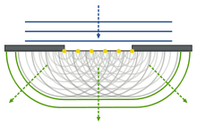
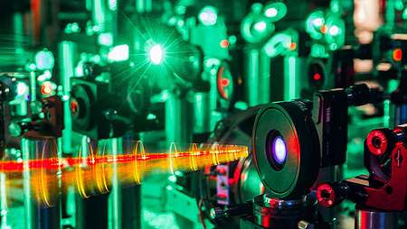

Die Optik beschäftigt sich mit dem beobachten, beschreiben, manipulieren und berechnen des Lichtweges. Die Ausbreitung des Lichtes erfolgt geradlinig und mit Lichtgeschwindigkeit in einem Medium wie Glas, Luft oder Vakuum. Dazu gehören die Reflektion und Brechung, die Bildentstehung an Linsen und Spiegeln, die Entstehung der Farben, den Gesetzen der Farbmischung den verschiedenen Lichtquellen mit ihren unterschiedlichen Eigenschaften und die optischen Vorgänge im Auge.
Häufig teilt man die Optik in die Strahlenoptik, Wellenoptik und Quantenoptik.
Die Strahlenoptik, auch geometrische Optik, bedient sich dem Strahlenmodell des Lichtes und behandelt damit einfache, rein geometrische Weise, den Weg des Lichtes auf Linien. Dieses Modell entspricht nicht der physikalischen Realität, dennoch lässt sich mit Hilfe der Strahlenoptik die optische Abbildung mit ausreichender Genauigkeit beschreiben. [1]
 [2]
[2]Die Wellenoptik, auch physikalische Optik, bezeichnet man in der Physik den Teilbereich der Optik, der Licht als elektromagnetische Welle behandelt. Mithilfe der Wellenoptik lassen sich Eigenschaften wie Farbe, Interferenzfähigkeit, Beugung und Polarisation des Lichtes erklären, die mit geometrischer Optik nicht erklärbar sind. [3]
 [4]
Die Quantenoptik, historisch auch Quantenelektronik, ist ein Teilgebiet der Physik, das sich mit der Wechselwirkung zwischen Licht und Materie befasst. In Abgrenzung zur klassischen Optik ist Gegenstand der Quantenoptik die Erzeugung, die Ausbreitung, die Manipulation und der Nachweis von Licht in Situationen, in denen die durch die Quantenhypothese bedingte körnige Natur des Lichts nicht vernachlässigt werden kann. [5]
 [6]
Auf dieser Webseite beschäftigen wir uns allerdings ausschließlich mit dem einfachsten Teilgebiet, der Strahlenoptik.